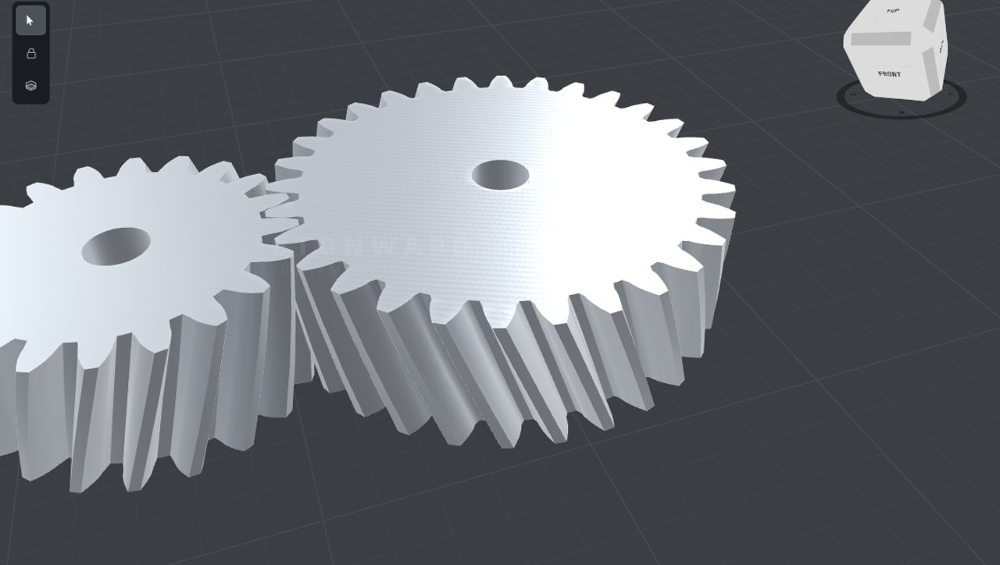

P-01Validación
Theta continuo en lazo cerrado
Control de posición para el eje rotativo de PolarONE con encoder magnético absoluto, regulador PID y estimación por filtro de Kalman. El plato nunca se detiene; el error se corrige en movimiento.
Diseñamos el software, fabricamos el hardware y escribimos el control. Una sola casa de ingeniería, de la primera línea de código al último tornillo.
En Stonward Dynamics creemos que la innovación real ocurre cuando un mismo equipo domina el ciclo completo: el modelo, la simulación, la máquina y el material.
Por eso desarrollamos nuestras propias herramientas de diseño, construimos nuestros propios equipos de manufactura y llevamos cada prototipo del plano a la pieza física sin intermediarios. Trabajamos en la frontera donde la mecánica de precisión, los sistemas vivos y la inteligencia artificial empiezan a hablar el mismo idioma.
Una plataforma abierta de ingeniería para estudiantes, makers y equipos que tienen ideas grandes y quieren fabricarlas.
Diseño paramétrico, ensamble, pruebas en banco y control de máquinas viven en el mismo programa y comparten el mismo modelo. Lo que dibujas es exactamente lo que se simula y lo que se fabrica.

Croquis con cotas y relaciones, sólidos exactos, historial editable y ensambles con uniones mecánicas reales.
Módulo 02Banco de pruebas virtual: electrónica, PLC, lógica de control e interferencias antes de cortar material.
Módulo 03El gemelo digital de cada máquina: simulación de G-code, cinemáticas complejas y control en tiempo real.
Módulo 04Trayectorias para fabricación aditiva, incluida la impresión en coordenadas polares.
Una plataforma de ingeniería para trabajos de alta exigencia y precisión. Un desarrollo de largo plazo del que iremos mostrando avances.
Aditiva, sustractiva y robótica. Cada plataforma resuelve un problema de manufactura distinto y comparte la misma filosofía: estructura rígida, cinemática bien resuelta y control abierto.
Control de posición para el eje rotativo de PolarONE con encoder magnético absoluto, regulador PID y estimación por filtro de Kalman. El plato nunca se detiene; el error se corrige en movimiento.
Una capa que traduce voz, gestos y movimiento en operaciones de diseño y de máquina dentro de SolidMaker. Es la base técnica de MIA.
Núcleo de ingeniería de alta precisión pensado para escalar más allá del aula: cálculo, validación y manufactura con exigencia industrial.
Una asistente virtual multimodal desarrollada en conjunto con Hyde.corp. Recibe instrucciones por voz, movimiento y gestos, controla el software y las máquinas, y se presenta en su propio holograma.
Cinemáticas no convencionales, control de movimiento de precisión y manufactura multieje.
Instrumentación y automatización para entornos donde lo biológico exige control absoluto.
Mecanismos, actuadores y sensores que aprenden del cuerpo humano para extenderlo.
Modelos que entienden la intención de quien diseña y la convierten en geometría y movimiento.
Universidades, laboratorios, empresas o personas con una idea que merece fabricarse. Si quieres usar SolidMaker, una plataforma Stonward o colaborar con nosotros, escríbenos.